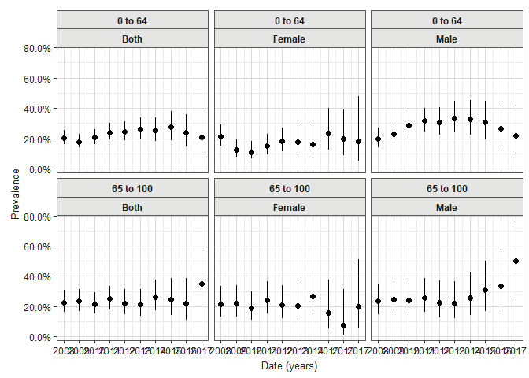

Package overview
IncidencePrevalence contains functions for estimating population-level incidence and prevalence using the OMOP common data model. For more information on the package please see our paper in Pharmacoepidemiology and Drug Safety.
Raventós, B, Català, M, Du, M, et al. IncidencePrevalence: An R package to calculate population-level incidence rates and prevalence using the OMOP common data model. Pharmacoepidemiol Drug Saf. 2023; 1-11. doi: 10.1002/pds.5717
If you find the package useful in supporting your research study, please consider citing this paper.
Package installation
You can install the latest version of IncidencePrevalence from CRAN:
install.packages("IncidencePrevalence")Or from github:
install.packages("remotes")
remotes::install_github("darwin-eu/IncidencePrevalence")Example usage
Create a reference to data in the OMOP CDM format
The IncidencePrevalence package is designed to work with data in the OMOP CDM format, so our first step is to create a reference to the data using the CDMConnector package.
Creating a connection to a Postgres database would for example look like:
con <- DBI::dbConnect(RPostgres::Postgres(),
dbname = Sys.getenv("CDM5_POSTGRESQL_DBNAME"),
host = Sys.getenv("CDM5_POSTGRESQL_HOST"),
user = Sys.getenv("CDM5_POSTGRESQL_USER"),
password = Sys.getenv("CDM5_POSTGRESQL_PASSWORD")
)
cdm <- CDMConnector::cdmFromCon(con,
cdmSchema = Sys.getenv("CDM5_POSTGRESQL_CDM_SCHEMA"),
writeSchema = Sys.getenv("CDM5_POSTGRESQL_RESULT_SCHEMA")
)To see how you would create a reference to your database please consult the CDMConnector package documentation. For this example though we´ll work with simulated data, and we’ll generate an example cdm reference like so:
cdm <- mockIncidencePrevalence(
sampleSize = 10000,
outPre = 0.3,
minOutcomeDays = 365,
maxOutcomeDays = 3650
)Identify a denominator cohort
To identify a set of denominator cohorts we can use the generateDenominatorCohortSet function. Here we want to identify denominator populations for a study period between 2008 and 2018 and with 180 days of prior history (observation time in the database). We also wish to consider multiple age groups (from 0 to 64, and 65 to 100) and multiple sex criteria (one cohort only males, one only females, and one with both sexes included).
cdm <- generateDenominatorCohortSet(
cdm = cdm,
name = "denominator",
cohortDateRange = as.Date(c("2008-01-01", "2018-01-01")),
ageGroup = list(
c(0, 64),
c(65, 100)
),
sex = c("Male", "Female", "Both"),
daysPriorObservation = 180
)This will then give us six denominator cohorts
settings(cdm$denominator)
#> # A tibble: 6 × 11
#> cohort_definition_id cohort_name age_group sex days_prior_observation
#> <int> <chr> <chr> <chr> <dbl>
#> 1 1 denominator_cohor… 0 to 64 Male 180
#> 2 2 denominator_cohor… 0 to 64 Fema… 180
#> 3 3 denominator_cohor… 0 to 64 Both 180
#> 4 4 denominator_cohor… 65 to 100 Male 180
#> 5 5 denominator_cohor… 65 to 100 Fema… 180
#> 6 6 denominator_cohor… 65 to 100 Both 180
#> # ℹ 6 more variables: start_date <date>, end_date <date>,
#> # requirements_at_entry <chr>, target_cohort_definition_id <int>,
#> # target_cohort_name <chr>, time_at_risk <chr>These cohorts will be in the typical OMOP CDM structure
cdm$denominator
#> # Source: table<denominator> [?? x 4]
#> # Database: DuckDB v1.3.2-dev13 [eburn@Windows 10 x64:R 4.2.1/:memory:]
#> cohort_definition_id subject_id cohort_start_date cohort_end_date
#> <int> <int> <date> <date>
#> 1 1 87 2008-01-01 2018-01-01
#> 2 1 116 2008-01-01 2009-01-10
#> 3 1 204 2008-01-01 2009-12-05
#> 4 1 271 2008-01-01 2008-02-06
#> 5 1 371 2008-01-01 2011-04-23
#> 6 1 390 2010-04-14 2013-03-29
#> 7 1 480 2008-01-01 2015-12-27
#> 8 1 526 2008-01-01 2008-03-12
#> 9 1 555 2010-03-24 2017-12-09
#> 10 1 567 2008-01-01 2011-04-23
#> # ℹ more rowsEstimating incidence and prevalence
As well as a denominator cohort, an outcome cohort will need to be identified. Defining outcome cohorts is done outside of the IncdidencePrevalence package and our mock data already includes an outcome cohort.
cdm$outcome
#> # Source: table<outcome> [?? x 4]
#> # Database: DuckDB v1.3.2-dev13 [eburn@Windows 10 x64:R 4.2.1/:memory:]
#> cohort_definition_id subject_id cohort_start_date cohort_end_date
#> <int> <int> <date> <date>
#> 1 1 2 1991-07-21 1991-12-05
#> 2 1 3 1996-08-23 1999-03-13
#> 3 1 9 1934-05-01 1939-09-20
#> 4 1 10 1994-06-16 1994-12-01
#> 5 1 13 1963-01-20 1969-02-06
#> 6 1 15 1901-01-28 1904-08-02
#> 7 1 16 2002-05-01 2006-07-26
#> 8 1 21 1913-07-19 1915-03-10
#> 9 1 29 1926-04-01 1928-01-18
#> 10 1 30 1919-07-17 1919-07-30
#> # ℹ more rowsNow we have identified our denominator population, we can calculate incidence and prevalence as below. Note, in our example cdm reference we already have an outcome cohort defined.
For this example we´ll estimate incidence on a yearly basis, allowing individuals to have multiple events but with an outcome washout of 180 days. We also require that only complete database intervals are included, by which we mean that the database must have individuals observed throughout a year for that year to be included in the analysis. Note, we also specify a minimum cell count of 5, under which estimates will be obscured.
inc <- estimateIncidence(
cdm = cdm,
denominatorTable = "denominator",
outcomeTable = "outcome",
interval = "years",
repeatedEvents = TRUE,
outcomeWashout = 180,
completeDatabaseIntervals = TRUE
)
plotIncidence(inc, facet = c("denominator_age_group", "denominator_sex"))
We could also estimate point prevalence, as of the start of each calendar year like so:
prev_point <- estimatePointPrevalence(
cdm = cdm,
denominatorTable = "denominator",
outcomeTable = "outcome",
interval = "years",
timePoint = "start"
)
plotPrevalence(prev_point, facet = c("denominator_age_group", "denominator_sex"))
And annual period prevalence where we again require complete database intervals and, in addition, only include those people who are observed in the data for the full year:
prev_period <- estimatePeriodPrevalence(
cdm = cdm,
denominatorTable = "denominator",
outcomeTable = "outcome",
interval = "years",
completeDatabaseIntervals = TRUE,
fullContribution = TRUE
)
plotPrevalence(prev_period, facet = c("denominator_age_group", "denominator_sex"))